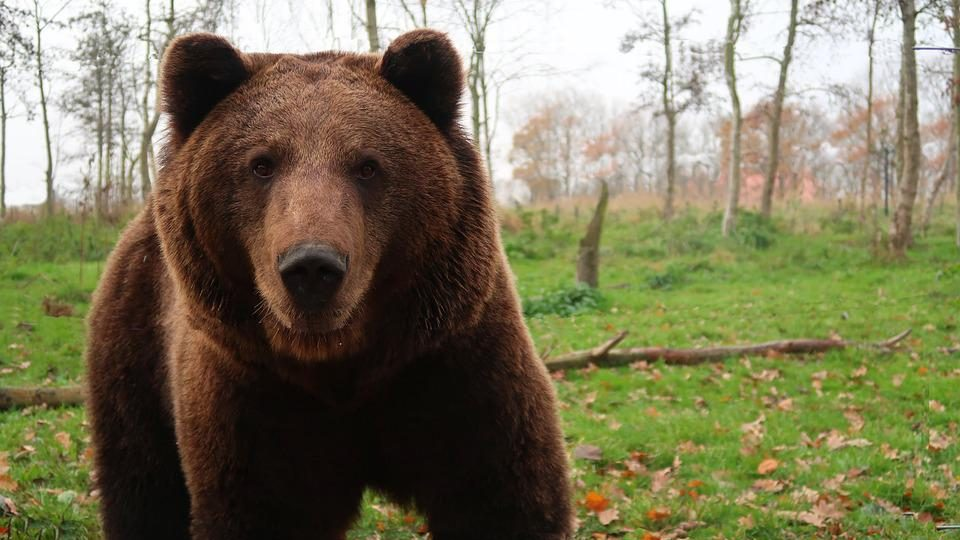

Utazás 2022
Helyszínek
Szállás
Kézdivásárhelyi Kollégium
Vélemény
A lápos ösvényen végigmenni teljesen feleslegesnek érződött de a kilátás szép volt.
A Szent Anna tóhoz egy hosszú úton kellet lemenni és elég esős idő is volt de a tó nagyon szép volt és kürtös kalácsot is lehetett kapni. Ez is egy jó nap volt
Szent Anna tó és a Lápos ösvény
Csütörtökön megérkeztünk 13:00-kor leszálltunk és vártuk az idegenvezetőt. Aki el kisért minket a láp tanösvényhez és körbe sétáltunk. Ez után vissza mentünk a buszhoz és onnan indultunk lefele a Szent Anna tó-hoz. Le érkeztünk a tóhoz és képeket csináltunk és nézelődtünk. Aztán volt kürtös kalács árus aki 20Lej-ért adta darabját. Körbe sétáltuk a tavat és pont el kezdett szakadni az eső. Aztán el indultunk vissza fele szakadó esőben a hosszú utón. Fel szálltunk a buszba szét ázva és indultunk tovább a szállásra Kézdivásárhelyre.
A nap vége felé ellátogattunk a kén bányába is ahol kibírhatatlan szagok voltak
